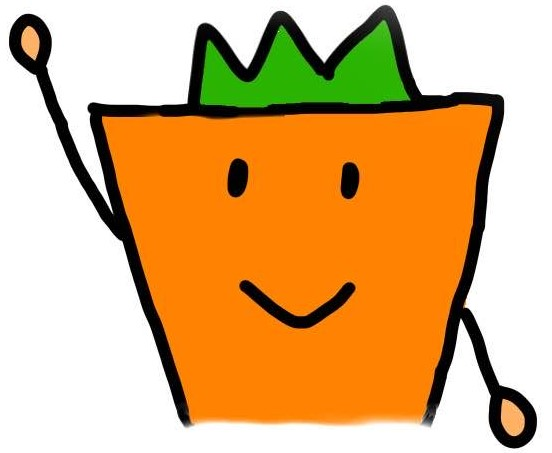
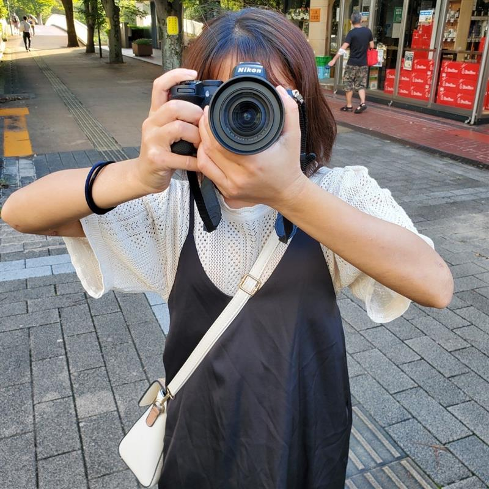
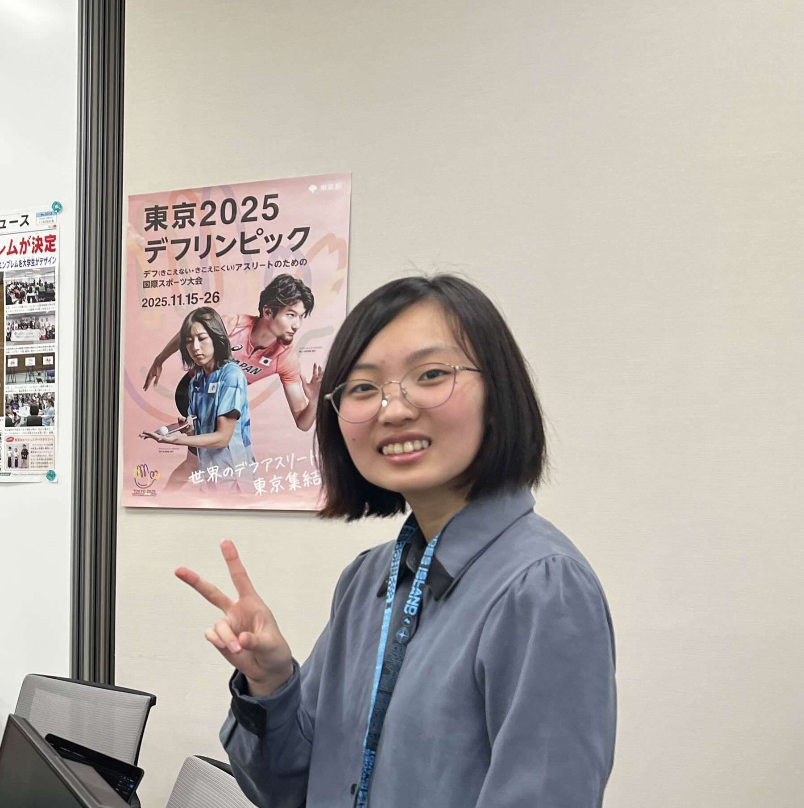

教員
菊地浩平(Kohei Kikuchi)
専門分野・興味：コミュニケーション科学
鍾 穎（Ying Zhong）
専門分野・興味：人間情報学、ヒューマンインタフェース、人間参加型AI
学生

飯塚 涼太（Ryota Iizuka）
技術科学研究科 産業技術学専攻 産業情報学コース 1年
【研究テーマ・興味】ろう者の発信、学習科学、アジャイル開発、情報保障
【趣味】プロ野球観戦（楽天イーグルスの大ファン）、国内旅行
【障害状況】聴覚に障がいがある。言葉での聞き取りが難しく、発話もできない。
【コミュニケーション手段】手話、筆談、チャット
【一言】元気の源は、東北楽天ゴールデンイーグルスの朗報だ！

赤野 芽（Mei Akano）
産業技術学部 産業情報学科 支援技術学コース 情報保障工学領域 4年
【研究テーマ・興味】聴覚障害者への心理的アプローチの検討、聴覚障害者（児も含める）メンタルヘルス、教育、子どもたちの居場所づくり、音楽
【趣味】推しを眺めること（赤楚衛二しか勝たん）、音楽鑑賞、聖地巡り
【障害状況】補聴器を付ければ、日常生活程度の会話内容は理解できるが、雑音環境下による口話でのやり取りは困難。
【コミュニケーション手段】第一言語は手話。相手や状況に応じて、声もつけて手話でコミュニケーション取る場合も。
【一言】「乗り越えた壁はいつか自分を守る盾となる」精神で頑張ります！

石濱 日菜（Hina Ishihama）
産業技術学部 産業情報学科 情報科学コース 4年
【研究テーマ・興味】ろう・難聴者と聴者混合のグループコミュニケーション、情報保障
【趣味】カラオケ、ゲーム
【障害状況】先天性感音性難聴
【コミュニケーション手段】音声認識等
【一言】研究のもやもやは、爆音で大熱唱して発散するに限る！
小山 穂乃花（Honoka Koyama）
産業技術学部 産業情報学科 支援技術学コース 情報保障工学領域 4年
【研究テーマ・興味】
【趣味】
【障害状況】
【コミュニケーション手段】
【一言】
徳永 理波（Rina Tokunaga）
産業技術学部 産業情報学科 情報科学コース 4年
【研究テーマ・興味】
【趣味】
【障害状況】
【コミュニケーション手段】
【一言】
山田 輝和（Hiyori Yamada）
産業技術学部 産業情報学科 情報科学コース 4年
【研究テーマ・興味】国内の事前収録映像コンテンツの字幕制作者支援、情報保障、インクルーシブデザイン、UI/UX
【趣味】バレーボール、ゲーム、映画鑑賞
【障害状況】先天性感音性難聴 口話での会話が概ね可能なレベル（状況による）
【コミュニケーション手段】口話、手話
【一言】毎日がeveryday
卒業生
髙瀬友花
2025年卒 産業技術学部 産業情報学科 支援技術学コース 情報保障工学領域
日高直也
2024年卒 産業技術学部 産業情報学科 情報科学コース
髙橋来海
2024年卒 産業技術学部 産業情報学科 支援技術学コース 情報保障工学領域
廣瀬紫優
2023年卒 産業技術学部 産業情報学科 情報科学専攻